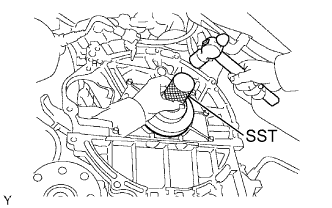
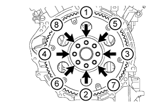
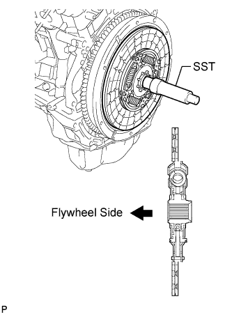
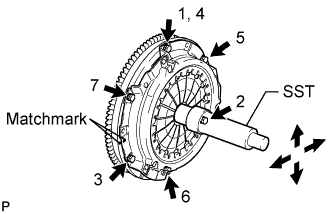
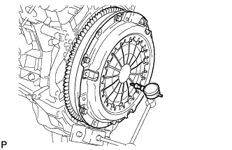
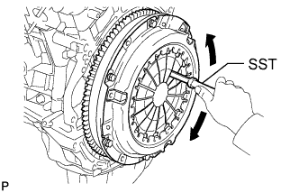

REAR CRANKSHAFT OIL SEAL > INSTALLATION |
| 1. INSTALL REAR CRANKSHAFT OIL SEAL |
 |
Apply MP grease to the lip of a new oil seal.
Using SST and a hammer, tap in the oil seal until its surface is flush with the rear oil seal retainer edge.
| 2. INSTALL DRIVE PLATE AND RING GEAR SUB-ASSEMBLY (for Automatic Transmission) |
 |
Using SST, hold the crankshaft.
Temporarily install the front spacer, drive plate and rear spacer with the 8 bolts.
 |
Tighten the 8 bolts uniformly in several steps in the order shown in the illustration.
| 3. INSTALL FLYWHEEL SUB-ASSEMBLY (for Manual Transmission) |
|
Using SST, hold the crankshaft.
Temporarily install the flywheel with the 8 bolts.
 |
Install and tighten the 8 mounting bolts uniformly in several steps.
| 4. INSTALL CLUTCH DISC ASSEMBLY (for Manual Transmission) |
 |
Insert SST into the clutch disc, then insert the clutch disc into the flywheel.
| 5. INSTALL CLUTCH COVER ASSEMBLY (for Manual Transmission) |
 |
Align the matchmark on the clutch cover with the one on the flywheel.
In the order shown in the illustration, temporarily install the 6 bolts starting from the bolt located near the knock pin on the top.
Check that the disc is in the center by lightly moving SST up and down, and left and right.
Evenly tighten the bolts by following the order shown in the illustration.
| 6. INSPECT AND ADJUST CLUTCH COVER ASSEMBLY |
 |
Using a dial indicator with a roller instrument, check the diaphragm spring tip alignment.
 |
If the alignment is not as specified, adjust the diaphragm spring tip alignment using SST.
| 7. INSTALL AUTOMATIC TRANSMISSION ASSEMBLY (for Automatic Transmission) |
Install the automatic transmission (Click here).
| 8. INSTALL MANUAL TRANSMISSION ASSEMBLY (for Manual Transmission) |
Install the manual transmission (Click here).